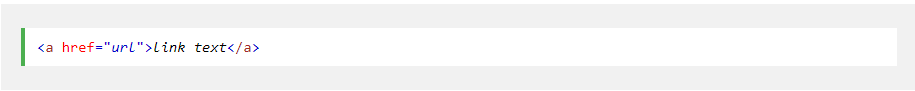
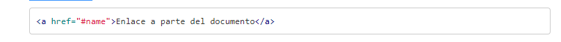

Los enlaces se encuentran en casi todas las páginas web. Los enlaces permiten a los usuarios hacer clic en su camino de una página a otra.
La < a>etiqueta HTML define un hipervínculo. Tiene la siguiente sintaxis:
w3schools.com (s.f.). HMTL Enlaces. Tomado de: https://www.w3schools.com/html/html_links.asp
De forma predeterminada, los enlaces aparecerán de la siguiente manera en todos los navegadores:
Hasta el momento lo que hemos visto es como montar enlaces en HTML a documentos. Ya sea porque enlazamos directamente al documento o bien porque enlazamos a un servidor o directorio que nos dará un documento. Pero otra capacidad que tenemos en HTML es la de enlazar a una parte concreta del documento. Imagina que en un documento tenemos un título y varios capítulos. Y lo que queremos hacer desde otro documento HTML o bien desde el mismo documento es enlazar directamente al inicio de un capítulo.
Una vez que hemos creado el marcaje del enlace en HTML en un documento es hora de acceder a esa parte del documento. Para ello solo tenemos que poner el nombre que le hayamos dado al atributo name precedido de una almohadilla. La sintaxis será:
w3schools.com (s.f.). HMTL Enlaces. Tomado de: https://www.w3schools.com/html/html_links.asp